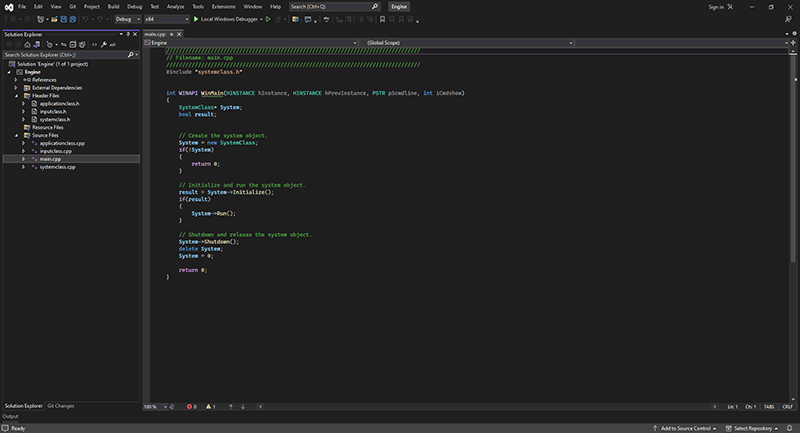

Before writing any graphics code we'll need to have the tools to do so. The first of these tools is a compiler that is preferably built into a nice IDE.
The one that I use is Visual Studio Community 2022. There are several other IDEs available on that net, and a number of them are free as well.
I'll leave that up to you to decide which one you prefer.
I personally use Visual Studio 2022 Community because it is free and it is an excellent IDE.
You can download Visual Studio 2022 Community from the Visual Studio website.
When you install Visual Studio 2022 make sure to choose the workload that is named: Game development with C++.
Once you have the IDE installed you can now write DirectX 11 applications.
Please note that other IDEs will need to have either the Windows 10 or Windows 11 SDK installed, but with Visual Studio these are already included in the Game development with C++ workload.
Setting Up Visual Studio Community 2022
In Visual Studio Community 2022 I used the following steps:
First you need to create a new project. So start Visual Studio and select "Create New Project".
From here you will want to select "Windows Desktop Application".
Next give the project a name (I called mine Engine) and a location where you want it to store your files and then click on "Create".
Next you can delete the default headers, source, and resource files it creates for you.
To add your own files click on "Project" and then select "Add Existing Item" and you can select your own source files or use the ones from these tutorials.
By default in the "Solution Platforms" drop down you should see "x64". If for some reason this says "x86" then pick "x64" instead.
This will set your project to 64 bit instead of the default 32 bit which is a requirement for the 64 bit alignment of data types such as matrices.
Summary
Our DirectX 11 development environment should now be setup and ready for us to start writing DirectX 11 applications.

To Do Exercises
1. Have a quick look over the DirectX 11 Programming Guide on the Windows Dev Center (msdn) website.
Older Tutorials
On the Rastertek website you will find the vast majority of the tutorials I wrote are in the historical section.
But most of those will not compile because Microsoft removed the DirectX SDK and replaced it with the Windows SDK.
Microsoft also deprecated the math library that was used in those tutorials so it is no longer available.
However the information in the older tutorials are still good and all you need to do is update small portions of the code to use the Windows SDK and related libraries instead.